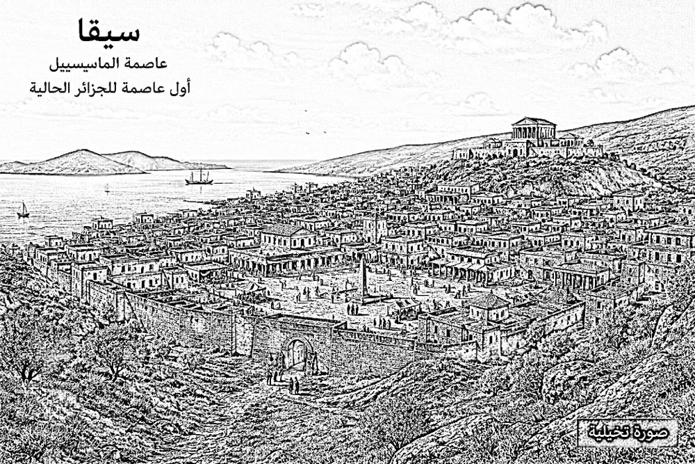
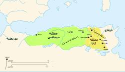
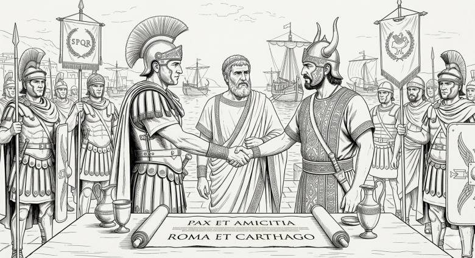
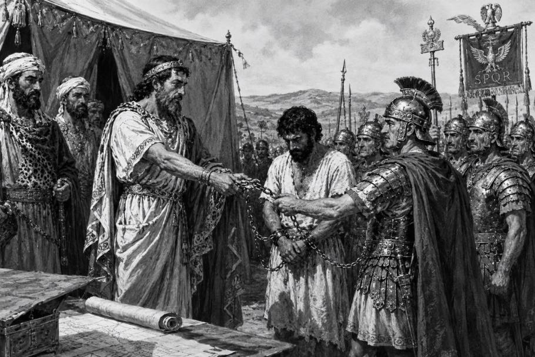

الفصل الثاني: ولهاصة الغرابة من العصر النوميدي إلى الفتح الإسلامي
مقدمة
يمثل تاريخ شمال إفريقيا الغربي خلال الفترة الممتدة من العصر النوميدي إلى الفتح الإسلامي مجالًا إشكاليًا تتقاطع فيه المعطيات الأثرية مع الروايات الكلاسيكية والتأويلات الحديثة، حيث لم تكن البنى السياسية ثابتة أو مركزية بشكل دائم، بل عرفت تحولات متتابعة بين الممالك الأمازيغية المحلية، والتدخلات القرطاجية، ثم السيطرة الرومانية بمختلف مراحلها، وصولًا إلى الوجود الوندالي والبيزنطي المحدود. وفي هذا السياق، تبرز منطقة سيقا ضمن المجال الجغرافي المرتبط بقبائل ولهاصة الغرابة بوصفها نموذجًا دالًا على هذا التداخل التاريخي، إذ تعكس مسار التحول من مركز تجاري مرتبط بالمنظومة القرطاجية إلى فضاء سياسي عسكري خاضع لإعادة تشكيل متكرر وفق موازين القوى المتوسطية. وتكمن أهمية دراسة هذا المجال في كونه يشكل نقطة تماس بين الداخل النوميدي والساحل المتوسطي، وهو ما جعله مجالًا ديناميكيًا لإعادة إنتاج السلطة والهويات السياسية عبر مختلف الحقب التاريخية، من مملكة الماسيسيل والماسيل، مرورًا بالهيمنة الرومانية، ثم الوندالية والبيزنطية، وصولًا إلى تشكل الكيانات الأمازيغية المتأخرة التي مهدت للانتقال نحو العصر الإسلامي.
.2.2مملكة الماسيسيل
بناءً على المقاربات التاريخية واللسانية المطروحة في الفصل الأول، وبالنظر إلى أن عاصمة سيقا تقع حالياً ضمن المجال الجغرافي لولهاصة الغرابة، فإن المدينة كانت في أصلها ميناءً قرطاجياً قبل عهد الملك سيفاكس، الذي يُعدّ المؤسس الفعلي للكيان السياسي الماسيسيلي «السادة الماسيل» ووفق هذه الفرضية، يُنسب سيفاكس إلى الملك إيلاص.
ومع ذلك، فإن ما يبدو أكثر رسوخاً في الدراسات التاريخية هو أن سيفاكس لم يكن مجرد قائد قبلي، بل مؤسس مشروع سياسي مستقل في غرب نوميديا، تمثل في بناء مملكة الماسيسيل وتثبيت سلطتها على مجال جغرافي واسع، في سياق التنافس الحاد مع قرطاج وصعود روما في حوض البحر الأبيض المتوسط16. وبهذا المعنى، فإن فرضية الانحدار الملكي لسيفاكس من سلالة ماسيلية أقدم تظل إطاراً تفسيرياً محتملاً، يُستخدم لفهم ديناميات تشكل السلطة في نوميديا المبكرة، أكثر من كونها حقيقة تاريخية مثبتة بشكل قاطع17.
ومهما يكن من أمر هذا التسلسل النسبي، فإن الثابت تاريخياً هو أن سيفاكس لم يقد تمرد على الهيمنة قرطاجية بل مشروعاً سياسياً يهدف إلى توحيد القبائل الأمازيغية في غرب نوميديا تحت سلطة مركزية، وتقليص التبعية للنفوذ القرطاجي، مع إعادة تنظيم المجال السياسي والاقتصادي بما يعزز استقلالية القرار المحلي. وقد تجسد هذا المشروع في ترسيخ مكانة مدينة سيقا وتحويلها من مركز ذي طابع تجاري متأثر بالقرطاجيين إلى عاصمة سياسية لمملكة الماسيسيل.
وفي المقابل بعد الملك القوي إيلاص بقيت في شرق نوميديا مملكة الماسيل التابعة لنفوذ القرطاجي، مما أفضى إلى نشوء ثنائية سياسية نوميدية جديدة، اتسمت بوجود كيانين أمازيغيين يتمتعان بدرجة متفاوتة من الاستقلال والسيادة النسبية عن القوى المتوسطية الكبرى. وقد مثّل هذا التطور تحولاً مهماً في تاريخ شمال إفريقيا القديم.
.1.2.2النشأة والتحول السياسي
ووفقاً لما أورده جوستين (Justin)18، فإن ممالك أمازيغية كانت قد تشكلت بالفعل منذ القرن الرابع قبل الميلاد نتيجة تجمع عدد من القبائل تحت سلطة سياسية مشتركة. فعندما تمرد حنون على قرطاج، استعان بملك من المور (الموريين). كما يُذكر في نهاية القرن نفسه الملك إيلاص) إيليماس (، ملك الليبيين، الذي تحالف مع أغاثوكليس ثم انقلب عليه لاحقاً. ورغم الطابع غير المستقر الذي اتسمت به هذه الممالك، فإنها تمثل البدايات الأولى لنشوء الدول النوميدية الكبرى.
وتؤكد الشهادات القديمة حالة التشتت السياسي التي اتسمت بها الشعوب النوميدية في بداياتها. فقد أشار سالوست19 (Salluste)إلى أن سكان نوميديا الأوائل كانوا يعيشون في جماعات متفرقة، دون تنظيم سياسي مركزي قوي، إلى أن أدت الحروب والظروف الخارجية إلى ظهور ممالك أكثر تنظيماً وبنيةً. وقد دعمت الدراسات الحديثة، وعلى رأسها أعمال ستيفان غزال20 (Stéphane Gsell)، هذا التحليل، إذ اعتبرت أن توحيد القبائل كان عملية تاريخية تدريجية تعززت بفعل التأثير القرطاجي والصراعات مع القوى المتوسطية.
تعدّ مدينة سيقا (Siga) نموذجاً محورياً لفهم هذه التحولات البنيوية، إذ نشأت في الأصل ميناءً ذا طابع تجاري يرتبط بالمنظومة القرطاجية، قبل أن تتحول تدريجياً إلى مركز سياسي يمتلك ديناميكيته الخاصة) انظر الشكل 1(. وقد أضفى موقعها الاستراتيجي عند مصب وادي تافنة أهميةً مزدوجة عليها: فهي من جهة نقطة عبور طبيعية بين العمق النوميدي والسواحل المتوسطية، ومن جهة أخرى مرسى يُيسّر الاندماج في شبكات التبادل التجاري القرطاجي ومد نفوذها نحو الداخل.
بيد أن هذا الوضع أخذ يتحول مع تصاعد التوترات بين النخب الأمازيغية المحلية والهيمنة القرطاجية. فقد برزت تكتلات قبلية تسعى إلى إعادة رسم خارطة المجال السياسي على أسس مستقلة، وتُرجع جُلّ القراءات التاريخية هذا التحول إلى بروز مشروع سياسي طموح قاده الملك سيفاكس، الذي يُعدّ المؤسس الفعلي للكيان الماسيسيلي في صورته السياسية المتماسكة والمنظمة.

الشكل 1. رسم تخطيطي افتراضي لمدينة سيقا، عاصمة المملكة الماسيسيلية
وقد تجلّى هذا التحول بوضوح فيما يمكن وصفه بـ«استئناف سيادة سيقا»؛ إذ جرى انتزاعها من وظيفتها التجارية التابعة وإعادة توظيفها عاصمةً سياسية للدولة الماسيسيلية الناشئة. وهكذا انتقلت المدينة من دور المركز الاقتصادي الملحق بقرطاج إلى دور المركز السيادي المستقل، تُديره سلطة ملكية محلية راسخة، تشكّلت حولها ملامح دولة مبكرة بمقوماتها المؤسسية والإقليمية.
ويذكر تيتوس ليفيوس (Titus Livius)21أن سيفاكس كان يمتلك، منذ أواخر القرن الثالث قبل الميلاد، جيشاً منظماً وقوة عسكرية كافية للتعامل مع قرطاج وروما على قدم المساواة. وكانت عاصمته سيقا (Siga)، الواقعة في موقع استراتيجي بالقرب من وادي تافنة والبحر الأبيض المتوسط، تتحكم في الطرق التجارية الرابطة بين داخل نوميديا وساحلها المتوسطي.
وفي هذا السياق، تُسجّل المصادر الكلاسيكية أول إشارة موثّقة إلى لفظ «مازاسيل» قُرابة عام 220 ق.م. ويُعدّ المؤرخ بوليسيو من أبرز من أثبت وجودهم العسكري، إذ يذكر أن جيش حنيبعل ضمّ في صفوفه فرسانَ من «الماسيسيل» وهو شاهدٌ تاريخي من الأهمية بمكان، لأنه يُجسّد حضور هذا الكيان فاعلاً في التوازنات العسكرية والسياسية لغرب البحر المتوسط في خضم الحروب البونيقية22، ويكشف عن عمق انخراطه في منظومة التحالفات الكبرى للحقبة.
.2.2.2 الامتداد الجغرافي
وفق ما تذكره المصادر الكلاسيكية، امتد المجال الجغرافي للمملكة الماسيسيلية ضمن فضاء شمال إفريقيا الغربي في إطار منظومة من الحدود الطبيعية ذات الدلالة السياسية والجغرافية. فمن الجهة الغربية، تشير روايات سترابون (Strabo) 23إلى أن المجال يبدأ عند نهر مولوشات (Mulucha)، وهو ما يُطابق نهر ملوية الحالي في المغرب، والذي مثّل حدًا فاصلًا بين الموريين غربًا والكيانات النوميدية شرقًا. كما يؤكد تيتوس ليفيوس(Titus Livius)24 هذا المعطى بوصفه أراضي الماسيسيل ممتدة غرب نوميديا حتى نهر مولوشا.
أما من الجهة الشرقية، فقد تميز المجال الماسيسيلي بحدوده مع أراضي الماسيل عند نهر أمبساغا (Ampsaga)، الموافق لوادي الكبير حاليًا، والذي شكّل في التصور الجغرافي الروماني الحد الفاصل بين الكيانات النوميدية الشرقية والغربية. وفي هذا السياق، يقدّم سترابون معطى جغرافيًا دقيقًا عند حديثه عن هذا المجال الحدودي، حيث يحدد منطقة الفصل عند رأس تريتون أو رأس ميتاغونيوم (Metagonium Promontorium)، المطابق تقريبًا لرأس بوقارون قرب مدينة القل الحالية. وعلى الرغم من أن سترابون لا يذكر اسم "ملساغا" صراحة، فإن التحليل الطوبوغرافي يسمح بربط هذا الحد الساحلي بمنطقة مصب وادي ملساغا أو نطاقه القريب.
ويتقاطع هذا الطرح مع ما تؤكده الدراسات في الجغرافيا التاريخية الحديثة حول دور المصبات المائية في تشكيل الحدود القبلية والسياسية في نوميديا، حيث تمثل الأودية والسواحل نقاط ارتكاز في تقسيم المجال. وبناءً عليه، يمكن اعتبار وادي ملساغا عنصرًا طبيعيًا ذا وظيفة حدّية ساهم في تحديد المجال الفاصل بين الماسيل والماسيسيل.
ومن الجهة الشمالية، انفتح المجال الماسيسيلي على الواجهة المتوسطية، بينما امتد جنوبًا نحو السفوح الشمالية لجبال الأطلس. وفي ذروة قوته، ولا سيما في عهد سيفاكس، توسعت المملكة لتشمل نطاقات أوسع وصلت، وفق بعض التقديرات الإغريقية والرومانية، إلى تخوم مضيق جبل طارق. كما يشير بوليبيوس إلى مشاركة فرسان الماسيسيل في جيش حنبعل خلال الحروب البونية) انظر الشكل2 (. ⁴

الشكل 2. الامتداد الجغرافي للمملكة الماسيسيلية
وعليه، يتضح أن الحدود الماسيسيلية لم تكن خطوطًا جامدة، بل فضاءً سياسيًا ديناميكيًا تحدده التوازنات العسكرية والاعتبارات الجغرافية الطبيعية.
.3.2.2الحرب البونية الثانية
شهدت المملكة الماسيسيلية خلال الحرب البونية الثانية تنافسًا حادًا بين القوى المتوسطية الكبرى (روما وقرطاجة) من أجل استمالة الزعيم الماسيسيلي سيفاكس (Syphax)، باعتباره أحد أبرز الفاعلين السياسيين والعسكريين في شمال إفريقيا الغربية. وقد سعت كل من قرطاج وروما إلى عقد تحالف معه لتأمين تفوقها الاستراتيجي في المنطقة.
في بداية الحرب البونية الثانية (218–201 ق.م)، وقبل إعادة تشكل التحالفات التي ميزت مراحلها اللاحقة، أقام الملك الماسيسيلي سيفاكس (Syphax) تقاربًا سياسيًا وعسكريًا مع روما، في إطار سعيه إلى الحد من النفوذ القرطاجي المتزايد داخل المجال النوميدي. وتذكر المصادر الكلاسيكية، وعلى رأسها رواية تيتوس ليفيوس، أن الرومان أوفدوا بعثة دبلوماسية إلى سيفاكس حوالي سنة 213 ق.م، وعززوا هذا التقارب بإرسال الضابط الروماني كوينتوس ستاتوريوس (Quintus Statorius) لتدريب قواته وفق التنظيمات العسكرية الرومانية، وهو ما يُعد دليلًا واضحًا على انتقال العلاقة بين الطرفين من مجرد اتصالات دبلوماسية إلى مستوى التعاون السياسي والعسكري الفعلي. وقد استثمر سيفاكس هذا الدعم في مواجهة خصومه الإقليميين، ولا سيما الماسيل بقيادة الملك غايا (Gala)، الذين كانوا في تلك المرحلة حلفاء لقرطاج،غير أن سيفاكس انتهج في البداية سياسة توازن تهدف إلى الوساطة بين الطرفين، في محاولة لتفادي امتداد الحرب إلى المجال النوميدي، مع العمل في الوقت نفسه على تعزيز قدراته العسكرية الداخلية25.
وفي هذا الإطار، شهدت عاصمة الماسيسيل سيقا (Siga) لقاءات ومفاوضات دبلوماسية شارك فيها ممثلو روما وقرطاج إلى جانب السلطة الملكية الماسيسيلية) انظر الشكل3 (، بهدف التأثير في موقف سيفاكس السياسي، سواء لضمان حياد نوميديا الغربية، أو استمالته إلى أحد المعسكرين، أو تثبيت تحالفات ظرفية تخضع لموازين القوة المتغيرة في المنطقة. وتشير روايات كل من ليفي (Livy)26 وأبيان (Appian)27 إلى أن هذه المفاوضات لم ترقَ إلى مستوى معاهدة صلح دائمة، بل كانت أقرب إلى محاولات دبلوماسية أولية لاختبار مواقف الأطراف وإعادة تشكيل التحالفات، حيث سعت قرطاج إلى تعميق نفوذها عبر ربط سيفاكس بها سياسيًا وعسكريًا، في حين حاولت روما موازنة النفوذ القرطاجي عبر فتح قنوات تأثير بديلة. غير أن هذه المساعي لم تُفضِ إلى تثبيت حياد مستقر، إذ انتهت بتحول سيفاكس لاحقًا نحو التحالف مع قرطاج.

الشكل 3. ممثلو روما وقرطاج فيمفاوضاتسيقا
ومع تصاعد الصراع البونيقي (Les guerres puniques)، فشلت جهود الحياد، خصوصًا بعد تعنت المواقف الرومانية وتزايد الضغط العسكري والسياسي. وقد دفع هذا الوضع سيفاكس إلى التقارب مع قرطاج، وهو ما تُوّج بتحالف سياسي وعسكري بينها.
شهدت المملكة الماسيلية خلال السنوات الأخيرة من الحرب البونية الثانية أزمة خلافة سياسية عميقة تزامنت مع احتدام الصراع بين روما وقرطاج على السيطرة على شمال إفريقيا. فبعد وفاة الملك غايا (Gala) سنة 207 ق.م، انتقلت السلطة وفق الأعراف الملكية إلى أخيه أوزاليس (Oezalès)، الذي لم يلبث أن توفي بعد فترة وجيزة، ليخلفه ابنه كابوسا (Capussa). غير أن حكم هذا الأخير كان قصيرًا أيضًا، إذ آلت السلطة بعده إلى ابنه لاكومازيس (Lacumazès) سنة 206 ق.م بدعم من الشخصية النافذة مازايتول (Mazaetull) وعدد من أعيان المملكة الماسيلية. وفي الأثناء، عاد ماسينيسا (Masinissa) من شبه الجزيرة الإيبيرية إلى نوميديا أواخر سنة 206 ق.م، مستفيدًا من دعم الملك الموري باغا (Baga)، الذي وضع تحت تصرفه قوة قوامها أربعة آلاف فارس لمرافقته إلى حدود مملكته. وقد أدى اعتراض ماسينيسا على ترتيبات الخلافة الجديدة إلى اندلاع صراع داخلي بينه وبين لاكومازيس خلال الفترة الممتدة بين 206 و205 ق.م، انتهى بانتصاره وإعادة تشكيل السلطة داخل المملكة الماسيلية28.
بعد تصاعد الصراع الداخلي على السلطة داخل المملكة الماسيلية، لجأ لاكومازيس Lacumazèsإلى محاولة إعادة تموضع سياسي عبر طلب الدعم من الملك الماسيسيلي سيفاكس Syphax، إلا أن تحركاته واجهت مقاومة عسكرية من خصمه ماسينيسا Masinissaأثناء محاولته الوصول إلى حلفائه. وتشير الروايات إلى أن لاكومازيس تمكن من الإفلات بصعوبة من الملاحقة العسكرية في إحدى مراحل المواجهة، قبل أن يحصل على دعم عسكري من سيفاكس، مما أتاح له إعادة تنظيم قواته بالتحالف مع شخصيات نافذة داخل المعسكر الماسيلي، من بينهم مازايتول (Mazaetull)، في محاولة لاستعادة التوازن العسكري أمام ماسينيسا.29
غير أن المواجهات التي تلت ذلك لم تحسم لصالح أي طرف بشكل نهائي في البداية، إذ عرفت المنطقة سلسلة من الاشتباكات المتبادلة انتهت بتراجع الأطراف المهزومة نحو مناطق النفوذ الخلفية، حيث احتمى لاكومازيس ومعه بعض أنصاره في مجال سيفاكس، الذي أصبح ملاذًا سياسيًا مؤقتًا لخصوم ماسينيسا.
وفي مرحلة لاحقة، ومع تغير موازين القوى، تمكّن ماسينيسا من ترسيخ موقعه داخل المجال الماسيلي، بينما تراجع دور لاكومازيس تدريجيًا من المشهد السياسي، دون أن تشير المصادر إلى إعادة إدماجه الفعلية في السلطة، مما يعكس انتهاء دوره كطرف فاعل في الصراع على العرش.
وفي مرحلة لاحقة، ومع تحوّل موازين القوى في الحرب البونية الثانية، لجأت روما إلى دعم ماسينيسا بوصفه خصمًا سياسيًا وعسكريًا للملك الماسيسيلي سيفاكس (Syphax)، الذي كان قد انتقل إلى التحالف مع قرطاج. وقد تأسس هذا التقارب الرومانيالماسيلي على تقاطع المصالح الاستراتيجية بين الطرفين، إذ رأت روما في ماسينيسا حليفًا قادرًا على تقويض النفوذ القرطاجي في شمال إفريقيا، بينما وجد الأخير في هذا التحالف وسيلة لاستعادة وتوسيع سلطته السياسية. وقد تُوِّج هذا التعاون باعتراف روما بأحقيته في استرجاع الأراضي التي اعتبرها إرثًا ملكيًا لأسلافه، ليصبح بذلك الحليف النوميدي الرئيس لروما خلال المراحل الأخيرة من الحرب البونية الثانية، وهو ما مهّد لاحقًا لتوحيد القسم الأكبر من نوميديا تحت سلطت30ه.
يُعدّ الاقتتال الداخلي الذي شهدته المملكة الماسيلية خلال السنوات الأخيرة من الحرب البونية الثانية جزءًا من التنافس الجيوسياسي الأوسع بين روما وقرطاج، إذ تحولت الأزمة الوراثية داخل البيت الملكي النوميدي إلى امتداد للصراع المتوسطي بين القوتين المتنافستين. وفي هذا السياق، استغل الملك الماسيسيلي سيفاكس (Syphax) حالة الاضطراب التي أعقبت النزاع على السلطة داخل المملكة الماسيلية، فشنّ حملة عسكرية من الغرب باتجاه أراضي خصومه، وتمكن من بسط نفوذه على سيرتا، قبل أن يواصل تقدمه نحو مواقع ماسينيسا. وقد أسند قيادة جزء من عملياته العسكرية إلى قائده بوكار (Bucar)، الذي حقق انتصارًا سريعًا على قوات ماسينيسا، الأمر الذي اضطر هذا الأخير إلى الانسحاب مع مجموعة محدودة من نخبة فرسانه والاحتماء بالمناطق الجبلية لإعادة تنظيم صفوفه. ويكشف هذا التطور أن الصراع النوميدي لم يكن مجرد نزاع داخلي على الخلافة، بل أصبح منذ المراحل الأولى للحرب البونية الثانية حربًا غير مباشرة بالوكالة بين روما وقرطاج، حيث سعت كل قوة إلى توظيف الانقسامات السياسية داخل نوميديا لترجيح كفة نفوذها في شمال إفريقيا31.
بعد سلسلة المواجهات التي اندلعت في سياق الصراع النوميدي المتداخل مع الحرب البونية الثانية، كلّف الملك سيفاكس (Syphax) قائده بوكار (Bucar) بمطاردة ماسينيسا (Masinissa)، الذي لم يبق معه سوى عدد محدود من فرسان النخبة لا يتجاوز خمسين فارسًا بعد الخسائر التي تكبدها في المعارك السابقة32. وقد تعقبت القوات الماسيسيلية فلول جيشه حتى ضفاف أحد الأنهار، حيث غرق عدد من مرافقيه، الأمر الذي دفع بوكار إلى الاعتقاد بأن ماسينيسا قد لقي حتفه، فعاد إلى سيفاكس وأبلغه بنبأ وفاته. غير أن ماسينيسا تمكن من النجاة رفقة اثنين من أتباعه، واختفى لبعض الوقت حتى تعافى من جراحه، قبل أن يعيد تنظيم قواه تدريجيًا مستفيدًا من ولاء بعض القبائل الماسيلية وأنصار والده غايا، ولا سيما في منطقة السهول الكبرى، حيث نجح في تجميع نحو ستة آلاف من المشاة وأربعة آلاف من الفرسا33. وإدراكًا منه لخطورة هذا الانتعاش العسكري، تولى سيفاكس بنفسه قيادة العمليات العسكرية بمشاركة ابنه فرْمينا (Vermina)، واعتمد خطة هجومية محكمة انتهت بإلحاق هزيمة قاسية بماسينيسا، الذي لم يتمكن من النجاة إلا برفقة عدد محدود من الفرسان بعد اختراق الحصار المفروض عليه. وقد مكّن هذا الانتصار سيفاكس من بسط نفوذه على مجال سياسي واسع امتد من نهر ملوية (Mulucha) غربًا إلى حدود الأراضي القرطاجية شرقًا، الأمر الذي جعله أول حاكم نوميدي ينجح في إخضاع القسم الأكبر من المجال النوميدي لسلطة سياسية واحدة قبل ظهور المملكة النوميدية الموحدة في عهد ماسينيسا34. وفي هذا السياق، برزت سيرتا بوصفها المركز السياسي الجديد للمملكة، دون أن يلغي ذلك الأهمية التاريخية لكل من سيقا ودوڤة اللتين ظلتا تحتفظان بمكانتهما داخل البنية الإدارية والسياسية النوميدية.
وفي أعقاب هذه الانتصارات، عزز سيفاكس تحالفه مع قرطاج بزواجه من صوفونيسبة (Sophonisba)، ابنة القائد القرطاجي صدربعلجيسكو (Hasdrubal Gisco)، وهو زواج ذو أبعاد سياسية واضحة أسهم في ترسيخ التحالف بين الطرفين35. وفي المقابل، اضطر ماسينيسا إلى الانسحاب نحو مناطق القرامنت في الجنوب. وفي هذه الأثناء، كان القائد الروماني سيبيون الإفريقي (Publius Cornelius Scipio Africanus)، الذي عاد من إسبانيا سنة 206 ق.م وانتُخب قنصلًا، يضع خطة استراتيجية لنقل الحرب البونية الثانية إلى الأراضي الإفريقية، إدراكًا منه أن إضعاف قرطاج يمر عبر تفكيك تحالفاتها داخل نوميديا²36. وبالنظر إلى متانة التحالف القائم بين سيفاكس وقرطاج، رأى سيبيون في ماسينيسا، الذي فقد عرشه وأصبح في وضع سياسي هش، الحليف الأنسب لتحقيق أهدافه العسكرية. ولهذا الغرض، أرسل مساعده غايوس لايليوس (Gaius Laelius) إلى الساحل النوميدي، حيث جرت اتصالات مباشرة مع ماسينيسا في منطقة هيبوريجيوس (Hippo Regius)، وتم خلالها وضع أسس التعاون العسكري بين الطرفين37. وفي أواخر سنة 204 ق.م، نفذ سيبيون عملية الإنزال الكبرى في إفريقيا على رأس قوة تُقدَّر بنحو خمسة وثلاثين ألف جندي، قبل أن يتجه نحو أوتيكا (Utica)، حيث التحق به ماسينيسا على رأس ألفي فارس. وفي المقابل، تشكل تحالف مضاد جمع بين سيفاكس وصدربعلجيسكو، غير أن المبادرة الاستراتيجية انتقلت تدريجيًا إلى الجانب الروماني، خاصة بعد نجاح سيبيون في إحراق معسكري القرطاجيين والماسيسيل خلال شتاء 204–203 ق.م، ثم إلحاق هزيمة كبيرة بهما في معركة السهول الكبرى سنة 203 ق.م، الأمر الذي أدى إلى انهيار التوازن العسكري الذي كان سيفاكس قد بناه خلال السنوات السابقة، ومهّد الطريق لسقوط مملكته وصعود ماسينيسا بوصفه الحليف النوميدي الرئيس لروما38.
عقب هزيمة قوات سيفاكس وصدربعلجيسكو في معركة السهول الكبرى سنة 203 ق.م، كُلِّف كلٌّ من ماسينيسا (Masinissa) والقائد الروماني غايوس لايليوس (Gaius Laelius) بملاحقة سيفاكس ومنعه من إعادة تنظيم قواته39. وفي المقابل، انسحب سيفاكس إلى مجاله الماسيسيلي الأصلي، غير أنه لم يتخلَّ عن مشروعه السياسي والعسكري، إذ أعاد تشكيل جيش جديد استعدادًا لاستئناف المواجهة، ودارت المعركة الحاسمة لاحقًا في سياق هذا التصعيد العسكري المتواصل. شرق سيرتا في 24 جوان/يونيو 203 ق.م، وانتهت بانهيار قواته، ويُعزى ذلك، وفق المصادر القديمة، إلى اعتماد جيشه بدرجة كبيرة على مجندين حديثي العهد بالحرب يفتقرون إلى الخبرة القتالية. وخلال المعركة أُصيب فرس سيفاكس بسهم فسقط الملك جريحً.وبعد أسره، نُقل سيفاكس إلى روما حيث عُرض في موكب النصر، ثم انتهت حياته في الأسر داخل إيطاليا. أما على المستوى السياسي، فقد أدى سقوطه إلى بروز ماسينيسا كقوة مركزية في المنطقة، ما مهّد لاحقًا لتوحيد نوميديا تحت حكمه، وإنهاء الانقسام بين الماسيل والماسيسيل.
.4.2.2سقوط المملكة الماسيسيلية
بعد أسر والده الملك سيفاكس (Syphax) ونقل مركز السلطة إلى معسكر ماسينيسا (Masinissa)، لجأ فيرمينا (Vermina)، ابن سيفاكس، إلى الأجزاء الغربية المتبقية من المجال الماسيسيلي، خاصة في المناطق القريبة من سيقا والحدود الملوية، حيث عمل على إعادة تجميع فلول الجيش الماسيسيلي بدعم سياسي وعسكري من قرطاج40. وفي سياق استمرار الصراع على إعادة توزيع النفوذ في نوميديا، خاض فيرمينا مواجهة عسكرية أخيرة ضد القوات الرومانية وحلفائها النوميديين سنة 200 ق.م تقريبًا، انتهت بهزيمته بشكل حاسم41. وعلى إثر ذلك، أُجبر على قبول تسوية سلمية مع روما، ترتب عنها فقدان معظم نفوذه الإقليمي وتراجع سلطته السياسية بشكل كبير، مما سمح بتوسع نفوذ ماسينيسا وترسيخ سيطرته على القسم الأكبر من نوميديا، في إطار إعادة تشكيل الخريطة السياسية لشمال إفريقيا بعد الحرب البونية الثانية.
وفي هذا السياق، تمكن ماسينيسا (Masinissa) من توحيد نوميديا لفترة تاريخية مهمة، مما جعله أول من أسس كيانًا سياسيًا نوميديًا مركزيًا نسبيًا في المنطقة42. غير أن هذا التحول السياسي، رغم طابعه التوحيدي المحلي، ارتبط بشكل وثيق بإعادة تشكيل ميزان القوى في غرب المتوسط لصالح روما، إذ أسهم تحالفه الاستراتيجي معها في تعزيز النفوذ الروماني في شمال إفريقيا تدريجيًا43. وبذلك، فإن صعود ماسينيسا لم يكن مجرد عملية بناء دولة محلية فحسب، بل تزامن أيضًا مع انفتاح المجال المغاربي على التغلغل الروماني، الذي سيتطور لاحقًا إلى أشكال من الهيمنة السياسية والاقتصادية غير المباشرة، قبل الانتقال إلى السيطرة المباشرة على المنطقة.
3.2. نوميديا الموحّدة
بقيتسيقا (Siga) في إطار نوميديا الموحّدة إحدى المراكز السياسية المهمة التي ارتبطت بالمراحل المبكرة لتشكل الكيانات النوميدية قبل اكتمال مشروع التوحيد في عهد ماسينيسا (Masinissa). فقد مثّلت سيقا، إلى جانب سيرتا (Cirta)، أحد المراكز الحضرية التي عكست الطبيعة المزدوجة للسلطة النوميدية بين المجالين الشرقي والغربي، حيث كانت في فترات معينة عاصمة أو مقر إقامة لبعض الزعامات الماسيسيلية، قبل أن تتحول تدريجيًا مع إعادة تنظيم المجال السياسي إلى مركز ثانوي ضمن الدولة النوميدية الموحدة44. ومع صعود ماسينيسا وتوسيع سلطته على معظم التراب النوميدي، أعيد إدماج سيقا ضمن البنية الإدارية والسياسية للمملكة الموحدة، لتصبح جزءًا من شبكة مراكز محلية تخضع للسلطة المركزية في سيرتا، بما يعكس الانتقال من التنظيم القبلي-الإقليمي إلى كيان سياسي أكثر مركزية45.
بعد وفاة ماسينيسا (Masinissa) سنة 148 ق.م، ورغم نجاحه في بناء كيان نوميدي موحّد نسبيًا، انتقلت المملكة إلى مرحلة جديدة اتسمت بإعادة توزيع السلطة بين أبنائه وفق ترتيبات داخلية لم تكن دائمًا مستقرة، حيث قُسّم المجال النوميدي بين الورثة، ما أدى إلى بروز مراكز قوة متعددة داخل الدولة، مع استمرار الاعتراف الاسمي بالوحدة الملكية. وقد أسهم هذا التقسيم في إضعاف التماسك السياسي الداخلي، وفتح المجال أمام تدخل روما في الشؤون النوميدية بوصفها قوة وصاية سياسية غير مباشرة⁴. وفي هذا السياق، برز لاحقًا حفيد ماسينيسا، يوغرطة (Jugurtha)، الذي استطاع توحيد جزء كبير من المملكة عبر القوة والتحالفات، قبل أن يدخل في صراع مباشر مع روما عُرف بالحرب اليوغرطية (112–105 ق.م). وقد اتسمت هذه الحرب بطابع طويل ومعقد، جمع بين المواجهة العسكرية المباشرة والمناورات الدبلوماسية، حيث سعى يوغرطة إلى مقاومة التوسع الروماني والحفاظ على استقلال نوميديا، بينما عملت روما على فرض نفوذها السياسي والعسكري على المملكة. وانتهى الصراع بأسر يوغرطة ونقله إلى روما، ما شكّل نقطة تحول حاسمة في تراجع السيادة النوميدية المستقلة وتعاظم الهيمنة الرومانية في شمال إفريقيا46.
.1.3.2الحرب اليوغرطية
يُبرز تطور المملكة النوميدية بعد وفاة ميكيبسا حالة انتقال سياسي معقدة تداخلت فيها الشرعية الوراثية مع منطق القوة. فقد أُسند الحكم إلى أبنائه أديربالوهيمبسال، بينما تم إدماج يوغرطة بوصفه وريثًا مُتبنّىً داخل الأسرة الملكية47. غير أن هذا الترتيب سرعان ما انهار بفعل صراع داخلي انتهى باغتيال هيمبسال واستفراد يوغرطة بالسلطة، مستندًا إلى دعم عسكري ونخبوي واسع داخل المملكة.48
أدى هذا الانقسام إلى انقسام المجال النوميدي بين يوغرطة وأديربال، وتحوّل الخلاف إلى صراع دولي بعد تدخل روما، التي أعادت توزيع النفوذ بما يخدم مصالحها الاستراتيجية49. وقد استفاد يوغرطة من هذا الوضع عبر الجمع بين القوة العسكرية والدبلوماسية القائمة على الرشوة والتأثير السياسي داخل مجلس الشيوخ الروماني، مما أدى إلى إطالة أمد الصراع.50
وفي مرحلة لاحقة، أسهمت الحروب المتعاقبة والتدخل الروماني في تفكيك البنية السياسية النوميدية، وصولًا إلى إعادة تشكيل المجال السياسي في شمال إفريقيا تدريجيًا ضمن المجال الروماني، بعد سلسلة من التحالفات والانقسامات الداخلية التي أنهت فعليًا استقلال المملكة النوميدية51.
لجأ أديربال إلى روما طالبًا الدعم ضد يوغرطة الذي حاصره في سيرتا، حيث انتهت الأزمة بسقوط المدينة ومقتل أديربال، وهو ما شكّل نقطة تحول حاسمة في تطور الصراع52. ورغم تدخل روما عبر بعثات دبلوماسية متكررة، فإن النفوذ المالي والسياسي ليوغرطة داخل مجلس الشيوخ ساهم في تعطيل أي قرار حاسم ضده، مما سمح باستمرار الحرب وتفاقمها53.
.2.3.2سقوطالمملكة النوميدية
شهدت الحرب مراحل متباينة من الصراع، حيث لم تحقق الجيوش الرومانية بقيادة القادة الأوائل نتائج حاسمة، قبل أن يحدث تحول مهم مع قيادة ماريوس الذي أعاد تنظيم الجيش ورفع من كفاءته القتالية، مما أدى إلى تراجع نفوذ يوغرطة عسكريا54.
في المرحلة الحاسمة، برز دور الملك الموريطاني بوكوس الذي لعب دوراً محورياً في تغيير ميزان القوى، إذ تردد بين التحالف مع صهره يوغرطة وبين التقارب مع روما، لكنه في النهاية اختار التحالف مع الرومان وقام بتسليم يوغرطة) انظر الشكل4(، مما أنهى الحرب فعليا55.
وبعد سقوط يوغرطة، أعادت روما تنظيم المجال النوميدي، حيث تم تفكيك المملكة وتقسيمها بين النفوذ الروماني المباشر من جهة، وتوسيع سلطة موريطانيا تحت حكم بوكوس من جهة أخرى، وهو ما شكل نقطة تحول في تاريخ شمال إفريقيا ومهّد للهيمنة الرومانية الكاملة على المنطقة.

الشكل 4. بوكوس يسلم صهره يوغرطة الى روما
.4.2الاحتلال الروماني
شهدت نوميديا خلال القرنين الثاني والأول قبل الميلاد سلسلة من التحولات السياسية الحاسمة التي انتهت بتفكك وحدتها واندماج أجزاء واسعة منها في المجال الروماني والموريطاني. فقد مثلت حرب يوغرطة (112–105 ق.م) نقطة انعطاف أساسية، حيث انتهت بهزيمة مملكة نوميديا الموحدة وتعرضها للتفكيك التدريجي، إذ استفاد الملك الموريبوخوس الأول من تحالفه مع روما وتسليمه ليوغرطة، فحصل في المقابل على أجزاء من نوميديا الغربية، خاصة مناطق الماسيسيل، وهو ما عمّق انقسام المجال النوميدي56. لاحقًا، وبعد معركة ثابسوس سنة 46 ق.م وهزيمة جوبا الأول، أقدم يوليوس قيصر على إلغاء الكيان النوميدي نهائيًا، حيث ضُمّ الجزء الشرقي مباشرة إلى روما تحت اسم مقاطعة إفريقيا الجديدة (Africa Nova)، في حين أُعيد توجيه الجزء الغربي والوسط نحو المجال الموريطاني الناشئ57. ومع المرحلة الأوغسطية، أُعيد تنظيم المجال عبر تنصيب يوبا الثاني ثم ابنه بطليموس على مملكة موريطانيا الخاضعة للنفوذ الروماني، وجُعلت قيصرية (شرشال) عاصمة لها، قبل أن تُلغى هذه المملكة بعد اغتيال بطليموس سنة 40م وما تبعه من اضطرابات وثورة إيديمون، ليقوم الإمبراطور كلوديوس سنة 42م بتقسيمها رسميًا إلى مقاطعتين: موريطانيا القيصرية في الوسط والغرب الجزائري وعاصمتها قيصرية، وموريطانياالطنجية في شمال المغرب وعاصمتها طنجة، وبذلك اكتمل إدماج شمال إفريقيا الغربية في النظام الإداري الروماني وتحولت من ممالك أمازيغية مستقلة إلى مقاطعات إمبراطورية خاضعة لروما58.دخلت مدينة سيقا مرحلة جديدة ضمن البنية الإدارية الرومانية، حيث أُدرجت ضمن المجال الغربي من موريطانيا القيصرية.
لم تعد سيقا مركزًا سياسيًا ملكيًا كما في الفترات النوميدية السابقة، بل تحولت إلى موقع محلي ذي وظيفة إقليمية داخل شبكة الاستيطان الروماني التي اعتمدت على المدن الساحلية الكبرى مثل قيصرية (شرشال) كعواصم إدارية وثقافية. ومع ذلك، احتفظت سيقا بأهميتها الاستراتيجية باعتبارها نقطة ربط بين الداخل والسهول الغربية، كما استمر حضورها في الذاكرة الجغرافية والإدارية كإحدى الحواضر القديمة المرتبطة بالمجال الموريطاني–النوميدي، وإن بدرجة أقل من حيث النفوذ السياسي المباشر. وهكذا فإن وضع سيقا في العهد الروماني يعكس بوضوح سياسة روما القائمة على إعادة توجيه مراكز القوة من المدن الداخلية القديمة نحو الحواضر الساحلية المندمجة في النظام الإمبراطوري.59
شكّل خطّ الـLimes في موريطانيا القيصرية آليةً دفاعية رومانية متقدمة هدفت إلى ضبط المجال الحدودي بين الشمال المندمج في المنظومة الإمبراطورية والجنوب الصحراوي غير الخاضع للسيطرة المباشرة، حيث كانت تتمركز القبائل الرحل مثل الجيتول، وقد تجسّد هذا النظام عبر سلسلة من الحصون العسكرية المتقدمة التي أبرزها حصنا بومارياوألبولاي (تلمسان وعين تموشنت حاليًا)، واللذان شكّلا طوقًا عسكريًا مراقبًا للممرات الحيوية بين الداخل والساحل، مما أدى إلى عزل المجال المحيط بسيقا ضمن منطقة تماس عسكري خاضعة للرقابة الصارمة، وقطع امتداده الطبيعي نحو الجنوب والأطلس الصحراوي، كما عملت هذه المنظومة على تحويل طرق القوافل التقليدية إلى شبكات لوجستية عسكرية موجهة نحو خدمة الاستراتيجية الرومانية في المراقبة والسيطرة، وهو ما جعل سيقا جزءًا من فضاء حدودي مُحاصر يجمع بين الوظيفة الأمنية والاقتصادية داخل بنية استعمارية أعادت تشكيل التوازنات الجغرافية والبشرية في غرب موريطانيا القيصرية.60
.5. 2الاحتلال الوندالي
خلال فترة الاحتلال الوندالي لشمال إفريقيا (429–534م)، شهدت مدينة سيقا تحولًا جذريًا في وضعها السياسي والاقتصادي، حيث انتقلت من السيطرة الرومانية المباشرة إلى نمط حكم جديد اتسم بانحسار النفوذ الإمبراطوري وظهور كيانات أمازيغية مستقلة في محيطها. ويمكن تلخيص وضع سيقا في العهد الوندالي في عدة مراحل أساسية: أولها مرحلة الاجتياح الأولي (429–430م)، حيث أدى عبور الوندال بقيادة الملك جايزريك (Geiseric) إلى شمال إفريقيا إلى اضطرابات واسعة شملت مقاطعة موريطانيا القيصرية، وقد طالت أعمال التخريب والنهب العديد من الحواضر الرومانية، بما فيها المناطق المرتبطة بسيقا61. ثم جاءت مرحلة السيطرة الوندالية المحدودة، حيث ركّز الوندال نفوذهم أساسًا على الموانئ والمراكز الساحلية ذات الأهمية البحرية، مما جعل السيطرة على المناطق الداخلية، ومنها سيقا ومحيطها، ضعيفة وغير مباشرة في كثير من الأحيان، وهو ما تؤكده المعطيات الأثرية مثل اكتشاف كنوز من العملات الذهبية (Solidi) تعود إلى عهود أباطرة متأخرين مثل ليو الأول وزينون، بما يعكس استمرار النشاط الاقتصادي رغم تغير السلطة62. وأخيرًا، أدى تراجع النفوذ الوندالي في العمق الداخلي إلى بروز ممالك أمازيغية مستقلة في الغرب الجزائري، مثل ممالك المنطقة القريبة من تلمسان، مما جعل سيقا مجال تماس بين النفوذ الساحلي الوندالي والكيانات الداخلية المحلية، في إطار إعادة تشكل سياسي واقتصادي عميق للمنطقة خلال هذه المرحلة63.
.6.2مملكة ألطافا
تُعدّ مملكة ألطافا (Altava) كيانًا سياسيًا أمازيغيًا نشأ في غرب موريطانيا القيصرية خلال الفترة الممتدة بين أواخر القرن الخامس وبداية القرن السادس الميلادي، في سياق تفكك السلطة الوندالية وانحسار السيطرة الرومانية المباشرة عن الداخل64. وقد تشكّلت هذه المملكة حول مدينة ألطافا (تُقارب منطقة تلمسان الحالية)، بوصفها مركزًا حضريًا ذا إرث روماني سابق أعيد توظيفه ضمن بنية حكم محلية أمازيغية، جمعت بين العناصر المورية التقليدية وبعض المظاهر الإدارية الرومانية المتأخرة65. ويُرجَّح أن تأسيسها الفعلي يعود إلى مرحلة ما بعد ضعف الوندال في الداخل (نهاية القرن الخامس الميلادي)، حيث برزت كمجال مستقل نسبيًا قبل أن تتعزز مكانتها في القرن السادس.
أما من حيث الحكام، فإن المصادر التاريخية المتوفرة، وخاصة البيزنطية، تذكر عددًا محدودًا من الملوك المرتبطين بهذا الكيان، وأبرزهم الملك ماسونا (Masuna) في بداية القرن السادس الميلادي، والذي يُعد أول حاكم معروف لمملكة ألطافا، وقد حمل لقبًا يجمع بين الطابع المحلي واللاتينيبما يعكس الطبيعة الهجينة للمملكة بين الإرث الروماني والبنية الأمازيغية66. كما يُشار أحيانًا إلى خلفائه المحتملين، مثل ماستيغاس (Mastigas)، الذي ارتبط اسمه بمقاومة النفوذ البيزنطي في غرب الجزائر، وإن كانت المعطيات حول تسلسل الحكم في هذه المملكة تبقى جزئية وغير مكتملة بسبب ندرة المصادر67.
وفي هذا الإطار، كانت سيقا ضمن المجال الواسع الخاضع لنفوذ ألطافا، دون أن تكون عاصمة أو مركز حكم مباشر، بل شكلت نقطة تماس اقتصادية وجغرافية داخل شبكة هذا الكيان السياسي، الذي مثّل مرحلة انتقالية بين العالم الروماني المتأخر وبدايات التنظيمات السياسية الأمازيغية المستقلة في شمال إفريقيا68.
لم تشهد مدينة سيقا احتلالًا بيزنطيًا مباشرًا أو فعليًا، رغم نجاح الإمبراطورية البيزنطية بقيادة الإمبراطور جستنيان الأول وقائده الشهير بيليساريوس في القضاء على مملكة الوندال سنة 534م وإعادة بسط النفوذ الروماني الشرقي على أجزاء واسعة من شمال إفريقيا69. إلا أن هذا التوسع ظل محدودًا جغرافيًا، إذ ركّز البيزنطيون جهودهم العسكرية والإدارية أساسًا على إقليم قرطاج والمناطق الشرقية من شمال إفريقيا (تونس الحالية وأجزاء من الشرق والوسط الجزائري)، في حين بقيت المناطق الغربية، ومنها حوض وادي التافنة حيث تقع سيقا، خارج نطاق السيطرة الفعلية بسبب ضعف الإمكانات اللوجستية وصعوبة التوغل في المجال الداخلي البعيد70. وفي هذا الفراغ السياسي، استمر نفوذ مملكة ألطافا، التي بسطت سيطرتها على سيقا ومحيطها، محافظة على استقلالها الفعلي عن السلطة البيزنطية، رغم وجود علاقات دبلوماسية أو اعترافات اسمية متبادلة أحيانًا لضمان الاستقرار وتأمين بعض المسارات التجارية71. وهكذا بقيت سيقا في العهد البيزنطي مدينة ذات طابع أمازيغي محلي، خاضعة للسلطة الإقليمية للممالك الداخلية، دون وجود عسكري بيزنطي مباشر، واستمر هذا الوضع إلى غاية بدايات الفتح الإسلامي.
الخلاصة
إن التحولات التاريخية التي شهدها المجال المرتبط بسيقا ضمن فضاء ولهاصة الغرابة من العصر النوميدي إلى الفتح الإسلامي تعكس دينامية سياسية واقتصادية معقدة تداخلت فيها القوى المحلية مع التدخلات المتوسطية المتعاقبة، حيث انتقلت سيقا من مركز تجاري مرتبط بالمنظومة القرطاجية إلى فضاء سياسي فاعل ضمن مملكة الماسيسيل، ثم إلى موقع استراتيجي داخل المملكة النوميدية الموحدة في عهد ماسينيسا، قبل أن تدخل مرحلة التفكك إثر التدخل الروماني وحرب يوغرطة، وما تلاها من إدماج تدريجي في النظام الإقليمي الروماني. ومع إعادة تنظيم المجال في العهد الروماني، أصبحت سيقا جزءًا من موريطانيا القيصرية، حيث خضعت لمنطق حدودي عسكري تمثل في نظام الـ Limes الذي أعاد تشكيل المجال بين الشمال المندمج إمبراطوريًا والجنوب الصحراوي، مما أدى إلى عزل نسبي للمناطق الداخلية وربطها بالبنية الدفاعية والاقتصادية للإمبراطورية. ولاحقًا، ومع تراجع السيطرة الرومانية، شهدت المنطقة مرحلة انتقالية مع الغزو الوندالي، ثم ظهور كيانات أمازيغية مستقلة مثل مملكة ألطافا، قبل أن تبقى في العهد البيزنطي ضمن نطاق نفوذ غير مباشر يعتمد على التوازنات المحلية بدل السيطرة الإمبراطورية المباشرة، وهو ما يعكس في النهاية أن تاريخ سيقا هو تاريخ مجال متحوّل باستمرار تُعاد صياغته وفق تبدل موازين القوى بين الفاعلين المحليين والإمبراطوريات المتوسطية.
الهوامش
Stéphane Gsell, Histoire Ancienne de l’Afrique Du Nord. Tome 5 (Hachette Livre Bnf, 2023).
↩(Titus Livius) Livy, Ab Urbe Condita (Cambridge University Press, 1994).
↩Marcus Junianus Justinus و Pompeius Trogus, Histoire universelle de Justin, extraite de Trogue-Pompée (H Barbou, imprimeur-libraire, 1805).↩︎
↩Salluste وآخرون, La Guerre de Jugurtha: Précédé de L’Historien Salluste, moraliste corrompu (Éditions de Crémille, 1972).
↩Gsell, Histoire Ancienne de l’Afrique Du Nord. Tome 5.
↩Livy (Titus Livius), Ab Urbe Condita, Book XXVIII–XXX (إشارات إلى قوة ملوك نوميديا ودورهم في الحرب البونية الثانية).
↩Titus Livy, The War with Hannibal: Books XXI-XXX of The History of Rome from Its Foundation (Penguin Publishing Group, 1972).
↩Strabo, تر. H. L. Jones, Geography, Volume VII(Loeb Classical Library 241), تاريخ الوصول 23 يونيو، 2026, https://www.loebclassics.com/view/LCL241/1930/volume.xml.↩︎
↩Livy, Ab Urbe Condita.
↩Livy (Titus Livius), Ab Urbe Condita, Book XXIV–XXV (الإشارات إلى العلاقات الرومانية مع ملوك نوميديا خلال الحرب البونية الثانية)
↩Livy, Ab Urbe Condita, Book XXIX, 23–34 (حول الاتصالات الدبلوماسية في سياق الحرب البونيقية الثانية وتحركات سيفاكس بين روما وقرطاج).
↩Appian, Roman History: The Punic Wars, sections 10–14 (حول التحالفات المتقلبة لسيفاكس ودور الدبلوماسية بين القوى المتوسطية).
↩Livy, Ab Urbe Condita, XXIX, 29–34؛ Polybius, Histories, XIV–XV (حول الوضع السياسي في نوميديا الشرقية بعد وفاة غايا وتطور السلطة المحلية).
↩Appian, Punic Wars, 10–14؛ Livy, XXIX, 33 (عودة ماسينيسا من إيبيريا ودور التحالفات المحلية في دعمه).
↩Appian, Roman History: The Punic Wars, sections 10–14 (حول التحالفات المتقلبة لسيفاكس ودور الدبلوماسية بين القوى المتوسطية).
↩Polybius, Histories, Book IX–XI (حول تداخل الصراع النوميدي مع الحرب البونية الثانية واستعمال القوى المحلية في الصراع بين روما وقرطاج)
↩Livy (Titus Livius), Ab Urbe Condita, Book XXIX–XXX (حول المواجهات بين سيفاكس وماسينيسا خلال الحرب البونية الثانية)
↩Polybius, Histories, Book XIV–XV (حول إعادة تنظيم ماسينيسا لقواه وتحالفاته القبلية).
↩Strabo, Geographica, Book XVII (حول المجال النوميدي وحدوده ومراكز السلطة السياسية).
↩Livy (Titus Livius), Ab Urbe Condita, Book XXX (حول زواج سيفاكس وصوفونيسبة ودلالاته السياسية)↩︎
↩Polybius, Histories, Book XIV–XV (حول استراتيجية سيبيون الإفريقي ونقل الحرب إلى إفريقيا).↩︎
↩Livy, Ab Urbe Condita, Book XXIX–XXX (حول تحالف ماسينيسا مع روما واتصالات لايليوس).↩︎
↩Polybius, Histories, Book XIV; Livy, Book XXX (حول معركة السهول الكبرى وانهيار تحالف سيفاكس وقرطاج)↩︎
↩Appian, Punica, Sections 25–30 (حول ملاحقة سيفاكس وتطور العمليات العسكرية بعد الهزيمة)↩︎
↩Titus Livius (Livy), Ab Urbe Condita, lib. XXX, 45-46، )حول مصير فيرمينا بعد أسر سيفاكس واستمرار المقاومة الماسيسيلية في غرب نوميديا. (↩︎
↩Polybius, Histories, Book XV (حول إعادة ترتيب الأوضاع السياسية والعسكرية في نوميديا بعد هزيمة سيفاكس).↩︎
↩Appian, Punica, Sections 33–37 (حول التسويات السياسية التي أعقبت الحرب البونية الثانية وصعود نفوذ ماسينيسا).
↩Strabo, Geographica, Book XVII (حول المجال النوميدي ووحدة السلطة السياسية في عهد ماسينيسا)↩︎
↩Strabo, Geographica, Book XVII (حول سيقا وسيرتا ومراكز السلطة داخل المجال النوميدي).↩︎
↩Gabriel Camps, Les Berbères, mémoire et identité (حول إعادة تنظيم المجال النوميدي وبناء الدولة المركزية في عهد ماسينيسا).
↩The Jugurthine War (Sallust), The Jugurthine War (حول الحرب اليوغرطية وأسر يوغرطة ونهاية استقلال نوميديا السياسي)
↩Sallust, The Jugurthine War, Sections 5–11 (حول وصية ميكيبسا وترتيبات انتقال السلطة بين أبنائه ويوغرطة).
↩Sallust, The Jugurthine War, Sections 12–16 (حول اغتيال هيمبسال وصعود يوغرطة إلى السلطة)↩︎
↩Sallust, The Jugurthine War, Sections 16–21 (حول تدخل روما وتقسيم النفوذ بين يوغرطة وأديربال).↩︎
↩Sallust, The Jugurthine War, Sections 28–35 (حول الرشوة والنفوذ السياسي ليوغرطة داخل مجلس الشيوخ الروماني).
↩Gabriel Camps, Les Berbères, mémoire et identité (حول تفكك المملكة النوميدية وتزايد الهيمنة الرومانية في شمال إفريقيا).
↩) Sallust, The Jugurthine War, Sections 22–26حول حصار سيرتا ومقتل أديربال
Appian, Libyca (Punica) (حول تطور التدخل الروماني في الشؤون النوميدية خلال القرن الثاني قبل الميلاد).↩︎
↩Sallust, The Jugurthine War (حول الحرب اليوغرطية بوصفها مواجهة بين نوميديا وروما).
↩Sallust, The Jugurthine War, Sections 84–91 (حول إصلاحات ماريوس العسكرية وتحوّل مجرى الحرب ضد يوغرطة).
↩Gabriel Camps, Les Berbères, mémoire et identité (حول نهاية الحرب اليوغرطية وإعادة تشكيل التوازنات السياسية في شمال إفريقيا)
↩Sallust, The Jugurthine War, Sections 113–114 (حول نهاية الحرب اليوغرطية، وتحالف بوخوس الأول مع روما وإعادة توزيع النفوذ في نوميديا الغربية).
↩Caesar, De Bello Africo (حول معركة ثابسوس سنة 46 ق.م، وهزيمة جوبا الأول وإنشاء مقاطعة إفريقيا الجديدة).
↩Gabriel Camps, Les Berbères, mémoire et identité (حول انتقال المجال النوميدي من الممالك الأمازيغية المستقلة إلى التنظيم الإداري الروماني).
↩Claude Lepelley, Les cités de l'Afrique romaine au Bas-Empire (حول التحول من المراكز الداخلية إلى المدن الساحلية في التنظيم الإداري الروماني).
↩Marcel Benabou, La résistanceafricaine à la romanisation (حول نظام الـLimes في موريطانيا القيصرية، ووظائفه العسكرية والاقتصادية في ضبط المجال الحدودي)
↩Victor of Vita, Historia PersecutionisAfricanaeProvinciae, Book I (حول عبور الوندال إلى شمال إفريقيا بقيادة جايزريك وتداعياته على المقاطعات الرومانية الإفريقية).
↩Yves Modéran, Les Maures et l'Afrique romaine (IVe–VIIe siècle) (حول تراجع السيطرة الوندالية في المناطق الداخلية واستمرار النشاط الاقتصادي وظهور الكيانات المحلية).↩︎
↩Procopius, History of the Wars (Vandal War), Book III (حول تراجع النفوذ الوندالي وصعود الممالك الأمازيغية المستقلة في غرب شمال إفريقيا)
↩Yves Modéran, Les Maures et l'Afrique romaine (IVe–VIIe siècle) (حول نشأة الممالك الأمازيغية المستقلة في غرب موريطانيا القيصرية).
↩Gabriel Camps, Les Berbères, mémoire et identité (حول مدينة ألطافا وتطورها من مركز روماني إلى عاصمة لمملكة أمازيغية).
↩Corpus InscriptionumLatinarum (CIL), VIII (حول نقش ماسونا ولقب Rex gentiumMaurorum et Romanorum).
↩Procopius, History of the Wars (Vandal War), Book IV (حول ماستيغاس والممالك المورية في غرب شمال إفريقيا).
↩Yves Modéran, Les Maures et l'Afrique romaine (IVe–VIIe siècle) (حول المجال الجغرافي والسياسي لمملكة ألطافا).
↩Procopius, History of the Wars (Vandal War), Books III–IV (حول القضاء على المملكة الوندالية وإعادة التوسع البيزنطي في إفريقيا)
↩Charles Diehl, L'Afrique byzantine : histoire de la domination byzantine en Afrique (533–709) (حول حدود السيطرة البيزنطية في شمال إفريقيا).
↩Gabriel Camps, Encyclopédie berbère, Vol. 4, “Altava” (حول العلاقات بين الممالك الأمازيغية والسلطة البيزنطية في غرب الجزائر).
↩